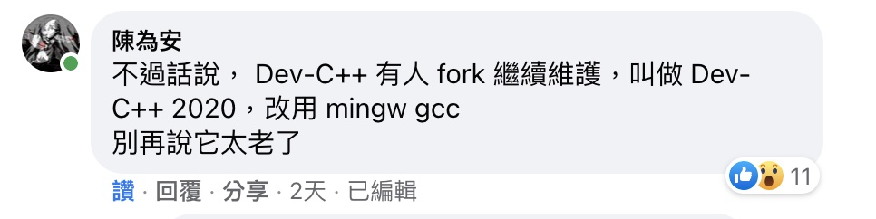
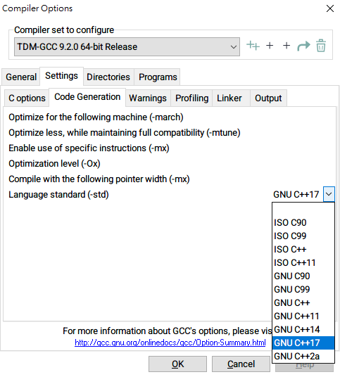
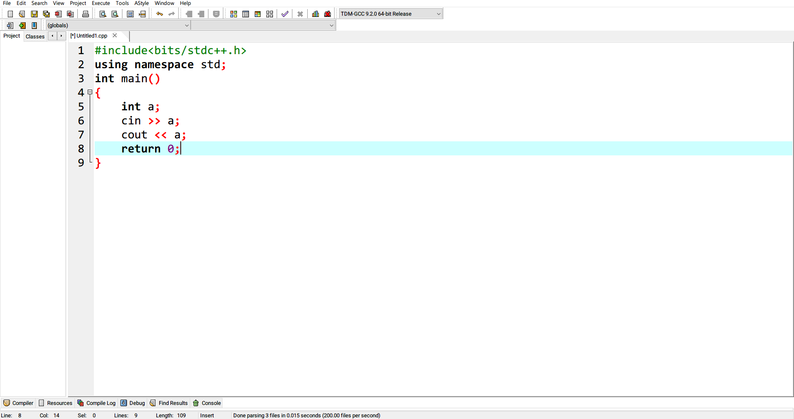
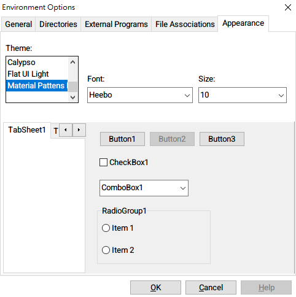
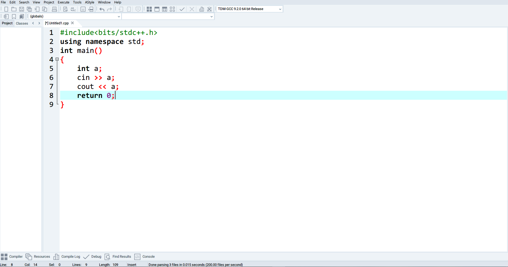
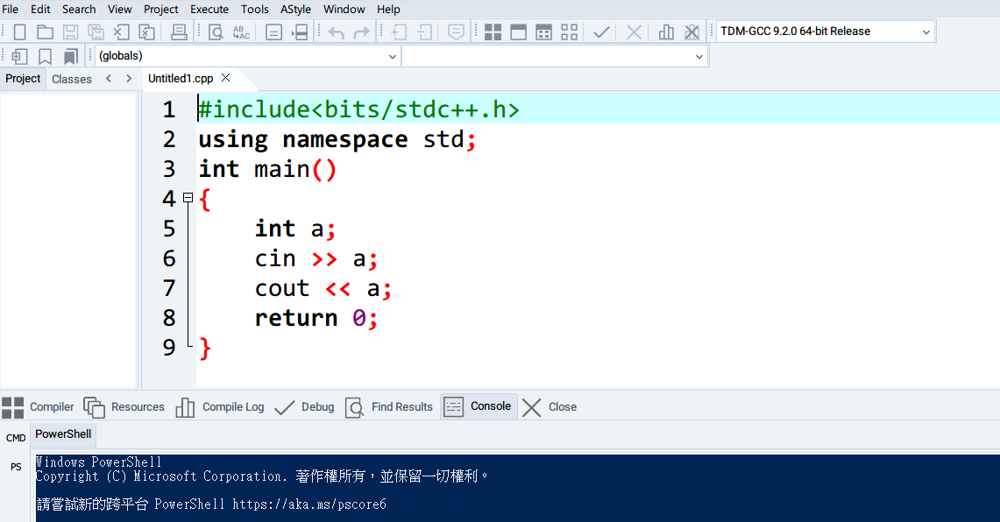

Dev-C++ 不就是個很古老的 IDE？蛤？它又更新了？
寫這篇文章的意義是幫忙把新版的 Dev-C++ 推出去，給更多人知道。
這一篇，獻給愛用 Dev-C++ 的你。
前言
依如往常的滑著電腦 Facebook，社團依舊充斥著廢文（不開玩笑，平常就是 IDE / Compiler 都搞不清楚地在亂吵）
唯有少數幾篇文，可以吸引到我的目光，講到 C 語言總會講到 Dev-C++。
滑了一下留言

給我等一下，Dev-C++ 2020？我怎麼不知道！
如果你直接去 Google Dev-C++ 2020 估計是找不到你要的結果。
後來去維基百科才知道 Dev-C++ 最新版本的 Source Code 位置。
新版 Dev-C++ 介紹
維護公司：Embarcadero
GitHub 連結: https://github.com/Embarcadero/Dev-Cpp
GitHub Release: https://github.com/Embarcadero/Dev-Cpp/releases
其實他也不叫做 Dev-C++ 2020，負責這項專案的公司也直接命名為 Embarcadero Dev-C++
這維護公司來頭也不小啊，有公司接手維護這個專案真的是一個奇葩之事吧！
編譯器 Compiler
目前選用 TDM-GCC 9.2.0，直接從 4.9.2 跳上去
選項也支援新版標準 C++ 20，之前手動更新編譯器都需要手動輸入參數才能換成新版標準。

外觀介面 Appearance
經典介面從 4.9.9.2 到 5.11 版本基本上都長這樣，能去改變外觀的選項比較少

最新版本他可以直接讓你更改樣式了

選取環境選項（Environment Options）$\rightarrow$ 外觀（Appearance）
就可以改成你想看到的主題（Theme）了。

等等，你真的是 Dev-C++ 嗎？
終端機 Command / PowerShell
都已經 2020 年了，把 IDE 跟 Terminal 放在一起已經算是標準配備了吧！
現在也終於可以囉！
最底下的選項也多了一個 Console 選項
點下後，下面視窗也有兩個按鈕分別為 CMD 跟 PS
CMD 指的是 Windows 傳統的 Command LinePS 指的是 Windows 最新的 PowerShell
只要點一下，就可以打開你想要的 Console 囉！
不要的 Console 也可以直接右鍵關閉就好

隱藏問題 Issue
安裝完成後，先不要選擇「繁體中文」，都先選擇「英文」
目前我在 Windows 10 的新版 Dev-C++ v6.2 跑繁體中文，會出現亂碼
這個問題暫時還沒修復，如果是新手，請暫時先忍一忍吧
總結
我想，這也是目前開源專案裡面最成功的例子了吧
三個大版本更新，全都是不同人開發、維護
希望這個開源精神，也有人能繼續傳下去
對著三個版本 Dev-C++ 的開發者們致上最高的 Respect！
目前我們就繼續期待著 Embarcadero Dev-C++ 會帶給我們什麼樣驚喜吧！
廢文附帶廢圖（？）
從今天起，Embarcadero 就是我大哥，誰說 Embarcadero 不好，對不起，我們不認識（Ｘ）